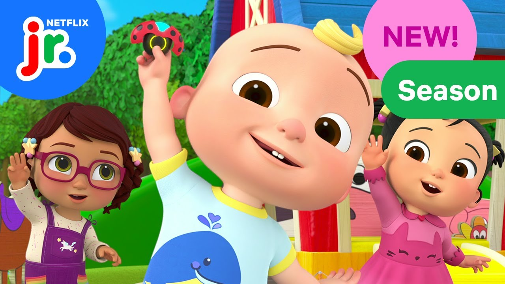

OFFICIAL PROMOTIONAL IMAGE / NETFLIX JR.ANIMATED SERIES / 2 SEASON
CoComelon
Lane
UV & Texturing
Props and environment set-dressing assets, prepared for an animation production pipeline.
My contribution
BLENDER / SUBSTANCE PAINTER
- UV unwrapped and textured props and environment set-dressing assets using Blender and Substance Painter.
- Created and applied PBR materials to meet production and pipeline requirements.
- Collaborated with the production team to maintain consistent asset quality.